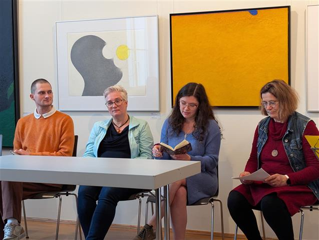
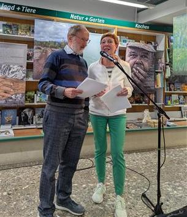
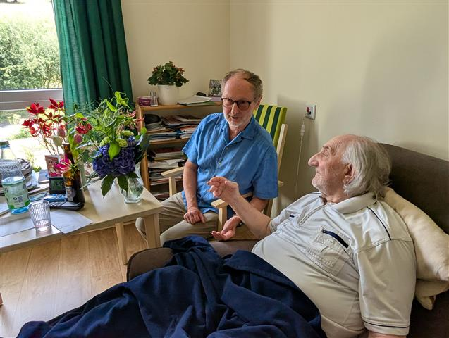
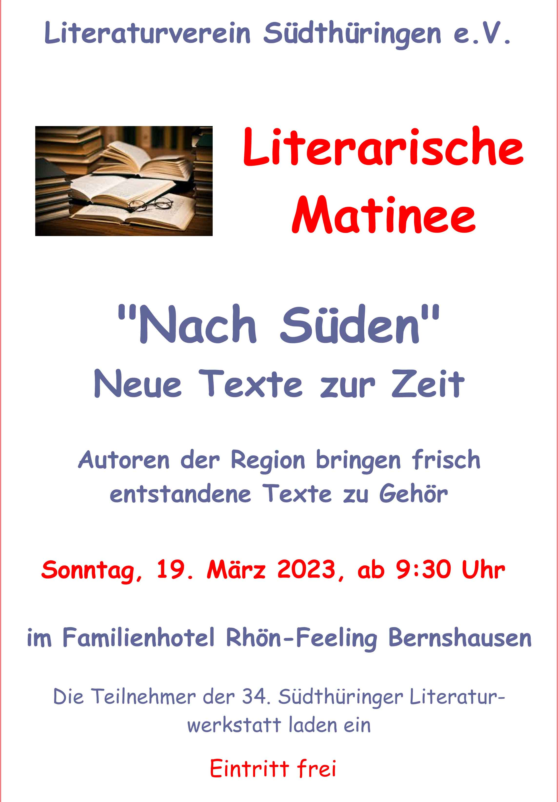
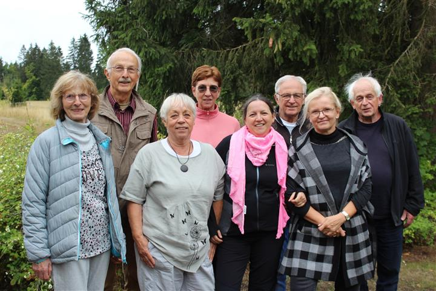
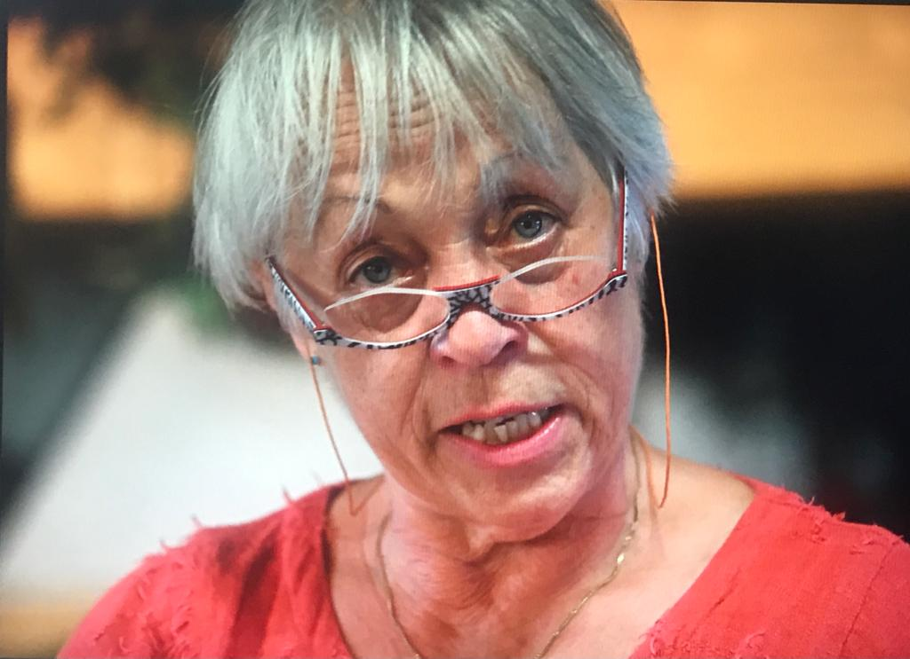
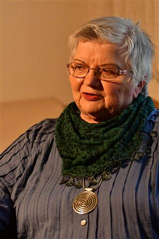
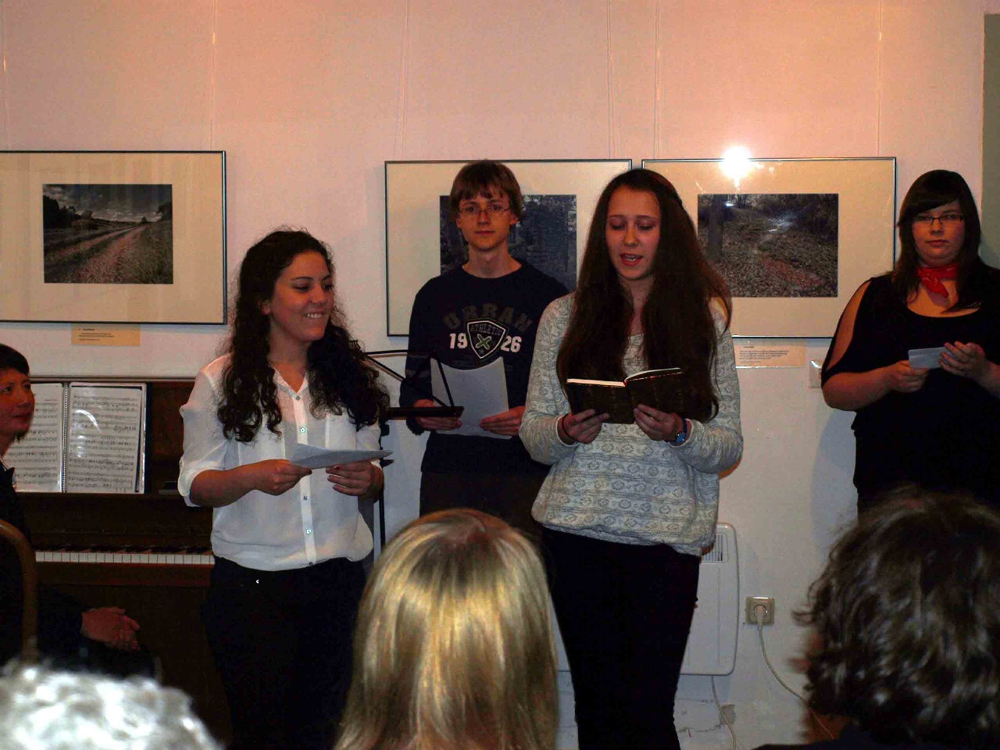
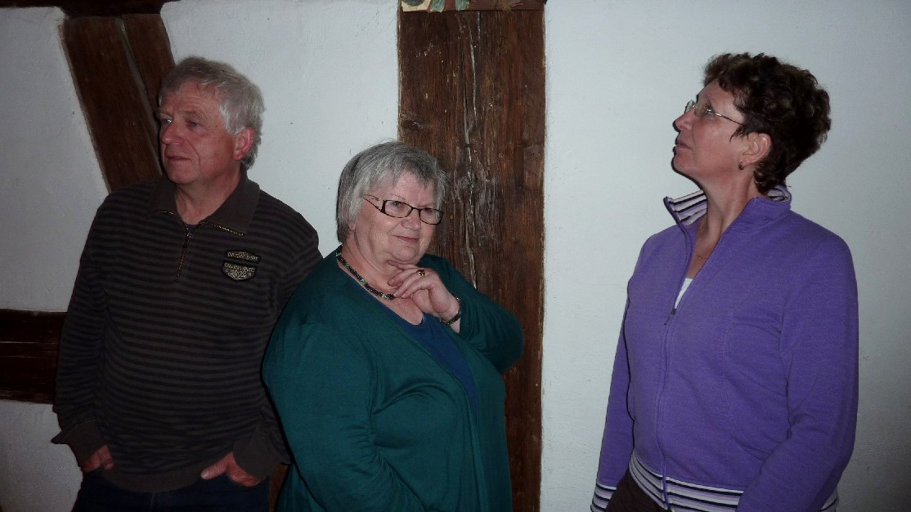

Pressemitteilungen und Berichte des Südthüringer Literaturvereins zu Veranstaltungen, Auszeichnungen und Vereinsaktivitäten seit 2012.
2026

37. Südthüringer Literaturwerkstatt in Rohr – öffentliche Abschlusslesung am 29. März in der VHS Meiningen
Zum 37. Mal veranstaltete der Verein seine Literaturwerkstatt im Hotel zum Kloster Rohr. 30 Schreibende arbeiteten unter dem Motto „Irrwege" mit den Lektoren André Schinkel (Prosa), Christian Rosenau (Lyrik) und Natalie Ewald (Jugendgruppe). Die öffentliche Abschlusslesung fand am Sonntagvormittag, 29. März, in der Aula der Volkshochschule Meiningen statt, musikalisch begleitet vom Gitarristen Lukas Eberwein. Der Eintritt war frei.
Weiterlesen & Bilder ansehen ➔2025
.jpg)
Erfolgreicher literarischer Abend mit Musik im Flechtwerk Almerswind
Am 19. Dezember 2025 präsentierten Vereinsmitglieder im Flechtwerk Almerswind/Schalkau den neuen Literaturkalender „Thüringer Ansichten" 2026. Mit dabei waren Ulrike Blechschmidt, Holger Uske, Christine Behrend sowie Kabarettist Ulf Annel aus Erfurt. Gustav Luthardt und Freunde aus Mengersgereuth-Hämmern sorgten für die musikalische Begleitung mit regionaler Volksmusik. Organisation: Heidi Büttner.
Weiterlesen & Bilder ansehen ➔.jpg)
„Wenn Worte leuchten und Töne wärmen" – Weihnachtslesung am 28. November in der Stadtbücherei Suhl
Die Schreibwerkstatt „Zeilensprung" gestaltete ihr Weihnachtsprogramm unter dem Titel „Wenn Worte leuchten und Töne wärmen" – ein literarisch-musikalischer Abend mit Geschichten, Gedichten und Gitarrentönen von Bernd Friedrich. Mit dabei: Martina Anschütz, Ulrike Blechschmidt, Iris Friebel, Roswitha Lesser und Kerstin Reichenbach.
Weiterlesen & Bilder ansehen ➔
Kalenderpremiere vor vollem Haus – Literaturkalender „Thüringer Ansichten" 2026
Die Premiere des neuen Zwei-Wochen-Literaturkalenders für 2026 war ein voller Erfolg: Elf Autorinnen und Autoren lasen ihre Texte, moderiert von Ulrike Blechschmidt und Holger Uske. Gitarrist Falko Wiesner bereicherte den Abend musikalisch. Der Kalender (DIN A3, 15 €) ist im Buchhandel erhältlich. Gestaltung: Andreas Kuhrt, Textorganisation: Heidi Büttner.
Weiterlesen & Bilder ansehen ➔
Lyriker Horst Wiegand wurde 90
Der Steinheider Lyriker Horst Wiegand, langjähriges Vereinsmitglied, feierte am 28. Juni 2025 seinen 90. Geburtstag. Mit zahlreichen auf das Wesentliche verknappten Gedichten hat er sich seit Jahrzehnten in das lyrische Gedächtnis Thüringens eingeschrieben – besonders sein 2021 in der Edition Muschelkalk erschienener Gedichtband „Winterreise". Vereinsvorsitzender Holger Uske besuchte ihn in Geraberg.
Weiterlesen & Bilder ansehen ➔
Vernissage „Schau!" am 8. Mai in der Rennsteig-Galerie Suhl
Zur Ausstellungseröffnung des Fotoclubs Kontrast in der AWG-Galerie (bis Ende Oktober) trugen neun Vereinsautoren eigens zu den Fotos entstandene Texte vor: Ulrike Blechschmidt, Heidi Büttner, Harald Lindig, Dietmar Hörnig, Iris Friebel, Manuela Ploch, Kerstin Göcking-Reichenbach, Theresa Werner und Holger Uske. Die Klangwelten von Jan Eppler auf der Handpan bereicherten den Abend.
Weiterlesen & Bilder ansehen ➔.jpg)
Doppel-Buchpremiere am 10. April im Buchhaus Suhl
Verleger Dr. Harry Ziethen stellte im Buchhaus Suhl zwei neue Bücher vor: den Erzählungsband „Stunden-Tanz" von Holger Uske (160 Seiten, mit Grafiken von Beate Debus) und den Gedichtband „Papierkokons" der Hallenser Autorin Christine Hoba. Eintritt frei.
Weiterlesen & Bilder ansehen ➔.jpg)
36. Südthüringer Literaturwerkstatt in Rohr – Abschlusslesung am 30. März in der Galerie ada Meiningen
29 Schreibende arbeiteten im Hotel Zum Kloster Rohr unter dem Motto „Glatteis" mit den Lektoren André Schinkel (Prosa), Christine Hansmann-Retzlaff (Lyrik) und Natalie Ewald (Jugend). Die Sonntagsmatinee fand erstmals in der Galerie „ada" in Meiningen statt – als Partnerort nach Schließung des Baumbachhauses. Musikalische Begleitung: Bernd Friedrich. Gefördert von der Kulturstiftung Thüringen.
Weiterlesen & Bilder ansehen ➔.jpg)
Literarisches „Schlossgeflüster" am 9. März im Wasserschloss Oberstadt (3. Ausgabe)
Zum dritten Mal luden Schlosseigentümer Saupe Vereinsautoren in den Rittersaal des Wasserschlosses Oberstadt ein. Etwa 60 Gäste erlebten Texte von Iris Friebel, Harald Lindig, Julia Kemmerzehl, Heidi Büttner, Ulrike Blechschmidt und Holger Uske, musikalisch begleitet von Bernd Friedrich.
Weiterlesen & Bilder ansehen ➔2024

Flechtwerk Almerswind: „Spannendes und Witziges aus 26 Jahren Südthüringer Literaturkalender" – 15. Dezember
Vereinsautoren und das Duo „Angie and Friends" (Angelika Schiekel & Franz Bäz) gestalteten einen literarisch-musikalischen Abend im Flechtwerk Almerswind. Im Mittelpunkt standen Texte aus den Literaturkalendern „Thüringer Ansichten" der vergangenen 26 Jahre. Eintritt: 5 €.
Weiterlesen & Bilder ansehen ➔.jpg)
Thüringer Kulturnadel für Vereinsvorsitzenden Holger Uske
Am 15. August 2024 erhielt Holger Uske im Bauhausmuseum Weimar aus den Händen von Kulturstaatsekretärin Tina Beer die Thüringer Kulturnadel. Laudatorin Janin Pisarek würdigte sein 34-jähriges Engagement für den Verein – von Verwaltungsaufgaben über Öffentlichkeitsarbeit bis zur persönlichen Förderung kreativer Menschen. Initiiert von Heidi Büttner und Sandra Eberwein. Auch Suhler OB André Knapp war zugegen.
Weiterlesen & Bilder ansehen ➔.jpg)
Literatur und Musik zum sechsten Mal in der Kulturscheune Rohr – 3. August
Schon zum 6. Mal bot der Verein seine „Scheunenlesung" im Stadel des Dreiseithofs Familie König in Rohr. Mit dabei: Dietmar Hörnig, Lukas Eberwein (Gitarre), Harald Lindig, Sandro Eberwein, Manuela Ploch, Bernd Friedrich, Martina Anschütz, Ulrike Blechschmidt und Holger Uske. Der Abend war Teil der geförderten Lesereihe 2024.
Weiterlesen & Bilder ansehen ➔.jpg)
Buchpremiere für Gedichtband „Am Rand entlang" von Harald Lindig – 18./19. Juni
Der neue Gedichtband von Harald Lindig mit 68 Gedichten (hrsg. von André Schinkel, Grafiken von Frank Rothämel, Dr. Ziethen Verlag) erlebte seine Premiere am 18. Juni in der Musikschule Ilmenau und am 19. Juni im Buchhaus Suhl. Musikalische Begleitung: Duo „Jazznah" (Ralf Kummer & Ulrich Heß). Eintritt frei.
Weiterlesen & Bilder ansehen ➔
Lesung „Bücher(R)egal" zum 120. Jubiläum der Stadtbücherei Suhl – 3. Juni
Mit einem eigens erarbeiteten Literaturprogramm gratulierten Vereinsautoren der Suhler Stadtbücherei zu ihrem 120. Gründungsjubiläum. Texte um das Thema Lesen und Sprache von Martina Anschütz, Ulrike Blechschmidt, Bernd Friedrich, Dietmar Hörnig, Julia Kemmerzehl, Roswitha Lesser, Harald Lindig, Manuela Ploch und Holger Uske. Eintritt frei dank des Fördervereins.
Weiterlesen & Bilder ansehen ➔
Verabschiedung des langjährigen Leiters des Literaturmuseums Baumbachhaus Meiningen
Am 27. Mai 2024 wurde Dr. Andreas Seifert in den Ruhestand verabschiedet. Vereinsvorsitzender Holger Uske dankte ihm für die langjährige Zusammenarbeit – über viele Jahre endeten die Werkstatttage des Vereins mit einer öffentlichen Lesung im Baumbachhaus.
Weiterlesen & Bilder ansehen ➔
35. Südthüringer Literaturwerkstatt in Rohr – Jubiläums-Werkstatt mit Abschlusslesung im Baumbachhaus Meiningen
26 Teilnehmer arbeiteten im Hotel Zum Kloster Rohr unter dem Motto „Bücher(R)egal". Lektoren: André Schinkel (Prosa), Christine Hansmann-Retzlaff (Lyrik), Natalie Ewald (Jugend). Die Abschlusslesung im Baumbachhaus Meiningen fand vor begeistertem Publikum statt, musikalisch umrahmt von den Liedermachern Bernd Friedrich und Holger Uske.
Weiterlesen & Bilder ansehen ➔2023
.jpg)
Begeisternde Premierenlesung für Literaturkalender „Thüringer Ansichten" 2024 im Buchhaus Suhl
Am 22. September 2023 feierte der neue Literaturkalender seine Premiere im Buchhaus Suhl – nach 9-jähriger Pause. 27 Autoren und 24 Fotografen und Künstler sind beteiligt. Kirchenmusiker Martin Wenzel aus Schalkau begleitete musikalisch. Moderation: Heidi Büttner. Der Kalender (DIN A3, 15 €) ist im Buchhandel erhältlich.
Weiterlesen & Bilder ansehen ➔
Erfolgreicher literarischer „Scheunensommer" am 5. August in der Kulturscheune Rohr (5. Ausgabe)
Zum fünften Mal lasen Vereinsautoren in der Kulturscheune Rohr. Neben Michael Carl, Sandra Eberwein, Ulrike Blechschmidt, Iris Friebel und Liedermacher Bernd Friedrich waren Manuela Ploch, Holger Uske, Ursula Schütt (die ihren Abschied von der aktiven Vorlesetätigkeit erklärte), Lukas Eberwein (Gitarre) und Heidi Büttner dabei. Teil der Lesereihe 2023, gefördert von Kulturstiftung Thüringen und Rhön-Rennsteig-Sparkasse.
Weiterlesen & Bilder ansehen ➔
Lesung mit André Schinkel am 13. Juni in der Suhler Stadtbücherei
Im Rahmen der 26. Thüringer Literaturtage las André Schinkel aus seinem Band „Die Schönheit der Stadt, die ich verlasse" in der Suhler Stadtbücherei. Die E-Cellistin Renate Kubisch aus Meiningen umrahmte den Abend musikalisch. Kooperation von Thüringer Lese-Zeichen e.V., Südthüringer Literaturverein und Stadtbücherei. Eintritt: 5 €.
Weiterlesen & Bilder ansehen ➔
Südthüringen verliert wichtige Autorin – Zum Tod von Erika Westhäuser (1933–2023)
Am 17. Mai verstarb die Autorin Erika Westhäuser aus Hildburghausen/Veilsdorf. Die phantasievolle Märchendichterin und Erzählerin in südthüringisch-fränkischer Mundart war seit Vereinsgründung 1990 Mitglied. Mit sieben nach 1990 veröffentlichten Büchern und legendären Lesungen hinterlässt sie eine unverwechselbare Stimme. Der Verein trauert um eine seiner bekanntesten und beliebtesten Autorinnen.
Weiterlesen & Bilder ansehen ➔
34. Südthüringer Literaturwerkstatt im Rhön-Feeling Bernshausen – Motto „Nach Süden"
Vom 17.–19. März 2023 trafen sich 22 Schreibende im Familienhotel Rhön-Feeling Bernshausen. Lektoren: Natalie Ewald (Jugend), Christine Hansmann (Lyrik), André Schinkel (Prosa). Öffentliche Lesung am Sonntagvormittag im Hotel, Eintritt frei. Gefördert von Kulturstiftung Thüringen und Rhön-Rennsteig-Sparkasse.
Weiterlesen & Bilder ansehen ➔2022

Heinrichser Herbst: Premiere für Holger Uskes Programm „Weltenwege" am 4. November in der Alten Post Heinrichs
Zum literarisch-musikalischen Abend mit neuen Gedichten, Erzählungen und Liedern lud das Kulturteam der „Alten Post" (Jens Gutberlet & Katrin Liebold) nach Heinrichs ein. Eintritt: 10 €. Kartenvorbestellung wegen begrenzter Plätze erforderlich.
Weiterlesen & Bilder ansehen ➔
Dritte „Keller-Geister-Lesung" der Schreibgruppe „Zeilensprung" am 23. September in Heinrichs
Im Anschütz'schen Keller in Suhl-Heinrichs lasen Ulrike Blechschmidt, Martina Anschütz, Roswitha Lesser, Iris Friebel, Dietmar Hörnig und Liedermacher Bernd Friedrich Texte rund um Natur, Umwelt und Zukunft. 19:30 Uhr, Eintritt frei.
Weiterlesen & Bilder ansehen ➔
Literarischer „Scheunensommer" am 13. August in der Kulturscheune Rohr (4. Ausgabe)
Zum vierten Mal boten Vereinsautoren ihre Sommerlesung in der Kulturscheune Rohr: Iris Friebel, Harald Lindig, Martina Anschütz, Dietmar Hörnig, Gerhard Goldmann (neu), Sandra und Sandro Eberwein, Holger Uske. Teil der Lesereihe 2022, gefördert von der Kulturstiftung Thüringen. Eintritt: 3 €.
Weiterlesen & Bilder ansehen ➔
33. Südthüringer Literaturwerkstatt im Rhön-Feeling Bernshausen – Motto „Auf der Kippe"
Vom 18.–20. März 2022 fand die Werkstatt im Familienhotel Rhön-Feeling statt. Lektoren: Natalie Ewald (Jugend), Christine Hansmann (Lyrik), André Schinkel (Prosa). Lektorenlesung am Freitagabend, öffentliche Matinee am Sonntagmorgen, Eintritt jeweils frei. Gefördert von der Kulturstiftung Thüringen.
Weiterlesen & Bilder ansehen ➔.jpg)
Buchpremiere: Neuer Lyrikband von Holger Uske am 17. März im Buchhaus Suhl
Der 124-seitige Lyrikband (hrsg. von André Schinkel, mit Grafiken von Beate Debus, Dr. Ziethen Verlag) erlebte seine Premiere im Buchhaus Suhl. Nach der Lesung kamen Uske, Schinkel und Debus ins Gespräch. Die Veranstaltung fand im Rahmen der Lesereihe 2022 des Vereins statt. Eintritt frei.
Weiterlesen & Bilder ansehen ➔2021
Weihnachtslesungen und Werkstattgespräch im Regionalfernsehen Rennsteig.TV
Coronabedingt wurden die Weihnachtslesung der Schreibgruppe „Zeilensprung" und die Buchpremiere für Holger Uskes Erzählungsband „Am Saum der Zeit" als Aufzeichnungen bei Rennsteig.TV ausgestrahlt. Beteiligt an der Weihnachtslesung: Ursula Schütt, Dietmar Hörnig, Harald Lindig, Roswitha Lesser, Iris Friebel, Bernd Friedrich, Ulrike Blechschmidt, Martina Anschütz und Holger Uske.
Weiterlesen & Bilder ansehen ➔
32. Südthüringer Literaturwerkstatt im Rhön-Feeling Bernshausen – Motto „Im Nebel"
Nach coronabedingten Ausfällen fand die Werkstatt vom 13.–15. August 2021 erstmals im Familienhotel Rhön-Feeling in Bernshausen statt. 25 Teilnehmer arbeiteten mit Lektoren Daniela Danz (Lyrik), André Schinkel (Prosa) und Natalie Ewald (Jugend). Öffentliche Matinee am 15. August um 10 Uhr. Gefördert von der Kulturstiftung Thüringen.
Weiterlesen & Bilder ansehen ➔.jpg)
9. Suhler Lesenacht am 20. Juli in der Sauer-Villa – Premiere für die Anthologie „Schatzsucher"
Corona-bedingt dreimal verschoben, fanden Literaturverein (30-jähriges Jubiläum) und Provinzschrei (20-jähriges Jubiläum) in der Sauer-Villa zusammen. Zehn der 17 Autoren der neuen Anthologie „Schatzsucher" lasen, musikalisch begleitet von Renate Kubisch (E-Cello). Gefördert von der Rhön-Rennsteig-Sparkasse.
Weiterlesen & Bilder ansehen ➔2020
.JPG)
Heidi Büttner gewinnt Landschreiber-Literaturwettbewerb 2020
Heidi Büttner aus Schalkau, stellvertretende Vereinsvorsitzende, gewann den 8. Landschreiber-Literaturwettbewerb „Sprache und Umwelt" in der Sparte Prosa für ihre Erzählung „Tintenfischdinner in tiefblau". Der international besetzte Wettbewerb verzeichnete auch Teilnehmer aus Österreich, der Schweiz, Frankreich und Rumänien. Herzlichen Glückwunsch!
Weiterlesen & Bilder ansehen ➔2019
.jpg)
Südthüringer Literaturverein wählt Vorstand bei Mitgliederversammlung am 23. November
Der bisherige Vorstand wurde einstimmig mit allen 12 Stimmen bestätigt: Holger Uske (Vorsitzender), Heidi Büttner (Stellvertreterin), Sandra Eberwein (Schatzmeisterin). Der Verein zählt 25 Mitglieder in der Region Südthüringen/Nordfranken.
Weiterlesen & Bilder ansehen ➔
Literarische „Fundstücke" am 31. August im Vereinshaus Vesser
Die Schreibgruppe „Zeilensprung" veranstaltete zum vierten Mal eine Literaturwerkstatt im Suhler Ortsteil Vesser. Am Samstagabend präsentierten ca. 10 Autoren im Vereinshaus „Vesserblick" Erzählungen, Gedichte, Anekdoten und Lieder. Mit dabei: Ulrike Blechschmidt, Ursula Schütt, Martina Anschütz, Dietmar Hörnig, Holger Uske, Heidi Büttner, Iris Friebel, Roswitha Lesser und Michael Carl.
Weiterlesen & Bilder ansehen ➔
Veranstaltungspremiere: Konzertlesung im Ratssaal Zella-Mehlis am 10. August
Erstmals traten Vereinsautoren gemeinsam mit Musikern des Südthüringischen Kammerorchesters auf: Harald Lindig, Ursula Schütt, Holger Uske und Ulrike Blechschmidt lasen Lyrik, Wolfgang Fuchs (Violine) und Julia Lucas (Klavier) musizierten. Eintritt: 10 €. Gefördert von der Kulturstiftung Thüringen.
Weiterlesen & Bilder ansehen ➔.jpg)
8. Suhler Lesenacht am 17. Mai – Auftakt mit Buchpreisträger Lutz Seiler
Zur 8. Suhler Lesenacht las Buchpreisträger 2014 Lutz Seiler aus „Kruso" und seinem neuen Romanmanuskript. Parallel lasen Nancy Hünger (Lyrik, Stadtbücherei), Iris Friebel (Galerie im Atrium CCS) und Holger Uske (Rennsteig-Galerie AWG). Veranstalter: Literaturverein und Stadt Suhl, gefördert von der Rhön-Rennsteig-Sparkasse.
Weiterlesen & Bilder ansehen ➔.JPG)
30. Südthüringer Literaturwerkstatt (Jubiläum) in Sinnershausen – Abschlusslesung im Baumbachhaus Meiningen am 4. Mai
28 Autoren trafen sich zum 30. Jahres-Workshop in Schloss Sinnershausen. Erstmals gab es zwei Jugendgruppen. Lektoren: Peter Neumann (Lyrik), André Schinkel (Prosa), Ulrike Blechschmidt und Natalie Ewald (Jugend). Die Abschlusslesung im Baumbachhaus Meiningen mit Pianist Gustav Kühn wurde zu einem der besten Leseabende der Vereinsgeschichte. Gefördert von Kulturstiftung Thüringen, Stadt Suhl und Rhön-Rennsteig-Sparkasse.
Weiterlesen & Bilder ansehen ➔
Lesung „Schlossgeflüster" am 24. März im Wasserschloss Oberstadt (1. Ausgabe)
Erstmals luden Schlosseigentümer Armin und Annelies Saupe Vereinsautoren in den Rittersaal des Wasserschlosses Oberstadt ein. Ursula Schütt, Harald Lindig, Iris Friebel, Sandra und Sandro Eberwein, Dietmar Hörnig und Holger Uske lasen vor über 40 Gästen. Musikalische Umrahmung: Holger Uske mit eigenen Liedern. Zugleich Auftakt zur Lesereihe 2019.
Weiterlesen & Bilder ansehen ➔2018

Lesung „Von der Liebe" mit Ursula Schütt am 18. August in der Kulturscheune Rohr
Ursula Schütt stellte mit Co-Autor Günter Giese den gemeinsamen Lyrik-Foto-Band „Zauberzeichen" vor. Der Abend in der Kulturscheune Rohr war als „Von der Liebe" betitelt. Im Rahmen der Lesereihe „Das besondere Format" von Schriftstellerverband und Lesezeichen e.V. Thüringen. Eintritt frei.
Weiterlesen & Bilder ansehen ➔
7. Suhler Lesenacht am 13. April – Auftakt mit Jakob Hein in Suhler Villen
Der Berliner Autor Jakob Hein eröffnete mit seinem Roman „Die Orient-Mission des Leutnant Stern" die 7. Suhler Lesenacht in der Stadtbücherei. Parallel lasen Ursula Schütt & Günter Giese (Premiere „Zauberzeichen", CLIP-Studio), Frank Michael Wagner (Villa Johannispark) und Hendrik Neukirchner mit Musiker Thomas Schlauraff (Villa Schleusinger Str.). Gefördert von der Rhön-Rennsteig-Sparkasse.
Weiterlesen & Bilder ansehen ➔2017
.jpg)
6. Suhler Lesenacht am 12. Mai – Auftakt mit Katja Lange-Müller über den Dächern von Suhl
Die vielfach ausgezeichnete Berliner Autorin Katja Lange-Müller eröffnete mit ihrem Roman „Drehtür" die 6. Suhler Lesenacht. Parallel: Joachim Krause (Familien-Geschichte „Fremde Eltern", Bibliothek), Harald Lindig & Martin Strauch (Programm „Zuglust", Türmerstube der Kreuzkirche) und André Kudernatsch (Kabarett, Gagarinsaal). Eintritt Auftakt: 5 €, Nachfolge-Lesungen frei.
Weiterlesen & Bilder ansehen ➔
28. Südthüringer Literaturwerkstatt in Sinnershausen – Abschlusslesung im Baumbachhaus Meiningen am 8. April
Über 20 Teilnehmer arbeiteten unter dem Motto „Hurra, 17!". Lektoren: Nancy Hünger (Lyrik, 7. Mal), André Schinkel (Prosa, 3. Mal), Ulrike Blechschmidt (Jugend). Die Abschlusslesung im Baumbachhaus wurde vom Klarinettenensemble „Clarinetti appassionati" der Max-Reger Musikschule Meiningen umrahmt. Gefördert von Freistaat Thüringen, Rhön-Rennsteig-Sparkasse und Stadt Suhl.
Weiterlesen & Bilder ansehen ➔2016
.jpg)
5. Suhler Lesenacht am 22. Juli – Weltautor Wolfgang Hohlbein und Open-Air an spektakulären Plätzen
Wolfgang Hohlbein, meistgelesener deutschsprachiger Fantasy-Autor (44 Mio. verkaufte Bücher), las in der Stadtbücherei. Anschließend drei Open-Air-Lesungen: Christian von Aster (Kletterspinne im Stadtpark), Rolf-Bernhard Essig (Innenhof Waffenmuseum, Sprichwörter) und Dietmar Hörnig von einem Floß auf dem Herrenteich. Eintritt Auftakt: 5 €, Open-Air frei. Gefördert von der Rhön-Rennsteig-Sparkasse.
Weiterlesen & Bilder ansehen ➔
27. Südthüringer Literaturwerkstatt in Sinnershausen – Abschlusslesung im Baumbachhaus am 30. April
32 Teilnehmer (davon 11 Jugendliche – erstmals die größte Gruppe) arbeiteten unter dem Motto „Flüchtig". Lektoren: Nancy Hünger (Lyrik, 6. Mal), André Schinkel (Prosa, 2. Mal), Ulrike Blechschmidt (Jugend). Am Sonntagvormittag Trommelworkshop mit Maximilian Strobel und Sören Georgy aus Suhl.
Weiterlesen & Bilder ansehen ➔2015
.jpg)
4. Suhler Lesenacht am 8. Mai in Heinrichs – Vier Orte, fünf Autoren
Die Berliner Autorin Abini Zöllner (Buch „Hellwach") eröffnete die Lesenacht in der VHS. Anschließend lasen an vier weiteren Orten: Horst Wiegand (Gewölbekeller Heinrichser Rathaus, Lyrik), Erika Westhäuser (Weinkeller Csutorka, Mundart), Sandra Hyneck (Alte Kapelle, historische Erzählungen) und Reiner Jesse (Weindepot, Arzt-Anekdoten). Eintritt frei dank Rhön-Rennsteig-Sparkasse.
Weiterlesen & Bilder ansehen ➔2014

Premiere für Literaturkalender „Thüringer Ansichten 2015" – 18. September im Buchhaus Suhl, 25. September in Jena
53 Autoren und 37 bildende Künstler beteiligten sich am 5. Kalender-Gemeinschaftsprojekt (DIN A3, Gestaltung: Andreas Kuhrt). Premiere im Buchhaus Suhl mit ca. 80 Gästen und Musiker Martin Wenzel. Zweite Premiere in der Galerie Schwing Jena mit irischen Volksweisen von Gunnar Nielson. Gefördert aus Überschüssen der Thüringer Staatslotterie.
Weiterlesen & Bilder ansehen ➔
25. Jubiläums-Werkstatttage in Schloss Sinnershausen – Abschlusslesung im Baumbachhaus Meiningen
Knapp 30 Teilnehmer (davon 6 Jugendliche) feierten das 25-jährige Werkstatt-Jubiläum im einstigen Jagdschloss Sinnershausen unter dem Motto „HinterSinn". Lektoren: Nancy Hünger (Lyrik, 4. Mal), Matthias Göritz (Prosa), Ulrike Blechschmidt (Jugend). Abschlusslesung im Baumbachhaus vor ausverkauftem Haus.
Weiterlesen & Bilder ansehen ➔3. Suhler Lesenacht am 11. April in Heinrichs – sieben Autoren an fünf außergewöhnlichen Orten
Auftakt in der VHS mit Martina Rellin (Berlin, „L(i)eben Ost-Frauen anders?"). Anschließend an fünf Orten: Holger Uske (Gewölbekeller VHS), Heidi Büttner & Franz Bätz (Gemeindehaus), Ulrike Blechschmidt & Bernd Friedrich (Alte Kapelle), Michael Carl (Weinkeller Csutorka) und Sandra & Sandro Eberwein (Salzgrotte). Mehr als 150 Besucher. Eintritt frei.
Weiterlesen & Bilder ansehen ➔2013

24. Südthüringer Literaturwerkstatt in Schafhausen – neues Domizil in der Thüringischen Rhön
Bei der 24. Werkstatt gab es einiges Neues: erstmals tagte der Verein in der Jugendbildungsstätte „Thüringische Rhön" in Schafhausen. 23 Autorinnen und Autoren widmeten sich dem Thema „Grenzerfahrung(en)". Lektoren: Matthias Göritz (Prosa), Nancy Hünger (Lyrik), Ulrike Blechschmidt (Jugend). Zur Soiree im Baumbachhaus spielte Wen-Chen Theile mit Meininger Musikschülern. Roland Amrhein führte am Sonntagvormittag an die einstige innerdeutsche Grenze.
Weiterlesen & Bilder ansehen ➔
2. Suhler Lesenacht am 11. April in Heinrichs – sieben Autoren an fünf außergewöhnlichen Orten
Zum zweiten Mal bot der Südthüringer Literaturverein gemeinsam mit der Stadtverwaltung und dank Förderung durch die Rhön-Rennsteig-Sparkasse eine große Lesenacht an. Von 19 bis ca. 23 Uhr lasen sieben Autorinnen und Autoren in Suhl-Heinrichs: Holger Uske (Gewölbekeller VHS, „Erdfahrt"), Heidi Büttner & Franz Bötz (Gemeindehaus), Ulrike Blechschmidt & Bernd Friedrich (Alte Kapelle), Michael Carl (Weinkeller Csutorka), Sandra & Sandro Eberwein (Salzgrotte) und Martina Rellin (Auftakt im großen Saal). Eintritt frei.
Weiterlesen & Bilder ansehen ➔2012

Horst Wiegand gewinnt Walter-Werner-Lyrikpreis 2012
Der Lyriker aus Steinheid erhielt am 16. November 2012 in der Suhler Stadtbücherei den mit 1.000 € dotierten Walter-Werner-Lyrikpreis des Vereins PROVINZKULTUR – einstimmig gewählt aus 278 Einsendungen von 114 Autoren (16–88 Jahre). Jurybegründung: „Horst Wiegand gelingt es, mit unverwechselbar eigener Stimme den Südthüringer Lebensraum zur Sprache zu bringen." Musikalische Begleitung: Renate Kubisch (E-Cello).
Weiterlesen & Bilder ansehen ➔
Ursula Schütt gewinnt Menantes-Literaturwettbewerb 2012
Die Suhler Autorin Ursula Schütt gewann am 16. Juni 2012 in Wandersleben den mit 2.000 € dotierten Menantes-Literaturpreis für ihre Erzählung „Froschkönig". Der internationale Wettbewerb verzeichnete 505 Einsendungen aus 13 Ländern. Herzlichen Glückwunsch!
Weiterlesen & Bilder ansehen ➔Pressekontakt
Für Presseanfragen und aktuelle Mitteilungen wenden Sie sich bitte an:
Holger Uske (Vorsitzender)
E-Mail: uske.suhl@gmail.com
Telefon: 03681 306098